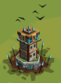
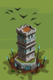
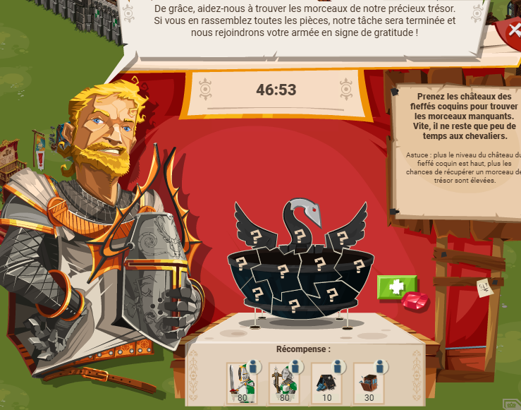
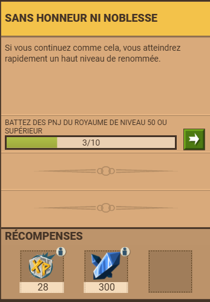
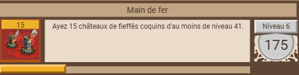
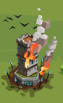
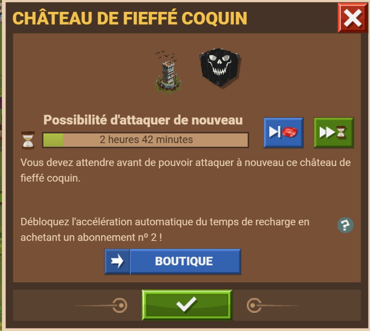
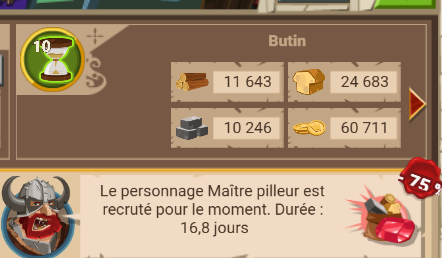
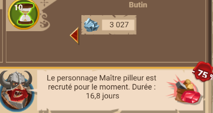

En fonction de leur niveau, les fieffés ont une apparence différente.
Du niveau 1 à 10-11 environ, c'est une tour de taille assez modeste (ci-dessous)
Du niveau 12 à 25-27 environ, c'est une tour de taille un peu plus grande et solidifiée (ci-dessous)

Du niveau 27 à 81,
c'est une grande tour à
l'aspet plus solide (ci-dessous)

Comme precisé dans la présentation, attaquer un fieffé coquin permet d'obtenir des ressources. Plus en détail, il y a les ressources de base (bois, pierres, nourriture) et dès le niveau 70 le minerai de fer qui s'ajoute, toujours dans des proportion assez faibles.
En plus, il faut souvent ajouter une pièce d'équipement (bailli/commandant) dont la rareté dépend du niveau du fieffé attaqué. Dès le niveu 25, les attaques sur fieffé peuvent rapporter des gemmes.
Après le niveu 70, les attaques sur fieffés rapportent toujours de l'équipement (commun/rare/épique/légendaire) mais JAMAIS d'équipement relique (bleu).
Attaquer un fieffé coquin peux aussi faire gagner des rubis au pillage (15 max/attaque), cette probabilité reste faible.
Un autre point est la quête des chevaliers errants et autres quêtes.

Il y a également des quêtes qui exigent des attaques sur fieffés
À partir du niveau 70, il y a par exemple ce genre de quête :

Cette quête existe aussi pour des niveaux inférieurs, avec des ruru en récompense, le plus souvent. Peux aussi dans de rare cas rapporter de l'xp.
Autre point : monter les fieffés proches du cp permet aussi de compléter un succès

Lancer une attaque contre un fieffé coquin, souvent il suffit de soldats pas cher pour gagner.
Après attaque

, il y a 3 heures miniumum avant une nouvelle attaque sur ce fieffé
Au niveau maximum (81), une attaque sur fieffé coquin donne ce rc (rapport de combat)
P-S : maraudeur actif (+90% de butin)

